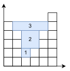

这两天在刷Leetcode的时候发现一个头痛的问题。经过学长提点，感觉算法十分有趣，因此记录一下。读者需要先简单了解一下单调栈的知识。
单调栈解法

首先我们看一下这张图。这里代表数据{5,4,1,2,4,6}。
那么通过单调栈来计算这个问题呢？我们可以看出来这里有几条规律：
- 在一个水坑中，水坑的高度取决于两个墙之间的最小值。
- 在水坑中，坑内的高度比两个墙的高度小。
- 一个水坑可以分割成好几个水坑，就像图中所示。
好像我在这里说了很多的废话，但这些性质确实十分重要，尤其是第三点。那么如何使用这三点性质来解决这个问题呢？
我们首先需要构建一个递减的单调栈。如果存在一个元素，使得栈中的元素发生了变化，就说明这个元素是一个“墙”，能与栈中的元素构成一个水坑。
当然，这个水坑并不是一个完全的水坑，因为在后面依然可能存在更高的墙，与栈中之前存储的之前的墙构成更大的水坑。 但是我们看一下性质3，大家有没有发现我们可以将水坑分割成一个个长方形？这个长方形的高是两堵墙中的较矮高度与前一个分割出水坑的墙高度的差？这几个长方形组合起来，便是整个水坑的面积。 也就是当更大的元素压入单调栈（并压碎元素）的过程中，形成了子水坑。这些水坑面积的加和，就是最终的答案。
让我们看一下在这个数据中，这个算法是怎么运行的。

当我们计算到第四个height的时候，此时我们发现第四个的高度比之前构建的栈的栈顶的高度要高。这说明在栈里有可能存在一个元素，这个元素的高度大于等于第四个height。也就是这里存在一个水坑。
如图所示，在1的位置存在一个水坑。在这个情况下，底为将要被pop的那个元素。然后我们很快就能计算出这个水坑的面积为1。让我们接下来读入下一个数据看看。

接下来我们读入了一个更高的墙！这很难办，如果正常的话，之前算的水坑相比较于这个墙形成的水坑简直是小巫见大巫！ 但是有没有发现，这个水坑的面积是在上一个小水坑之上再加上一个小长方形的面积？ 其实所有水坑都可以按照这个思路分解！我们可以将这个水坑横向切片，把计算整个水坑面积的任务分成计算小长方形的面积然后加和！你能很快的发现，这个方块2的底的纵坐标就是之前计算小水坑的墙的高度。那么通过这种方法，无论多复杂的水坑我们都可以分解，然后计算。
我们也可以结合单调栈，从另一个角度理解这个问题。当一个元素比栈顶大的时候，我们就可以在这个坑里按照这个元素的高度填充水泥（填充水泥的多少就是积水的多少）。 按照这种方法，我们一定可以获得一个平地。当下一次填充水泥的时候，就是在这个平地的基础上填充，而填充的高度正好是上一次栈顶pop前的次栈顶。 这种方式不断迭代，填充一次之后一定能满足下一次填充的条件。不断这样的迭代下去，最后就能算出来填充的面积。
实现
让我们看一下这个问题的C++实现：
1 | class Solution { |